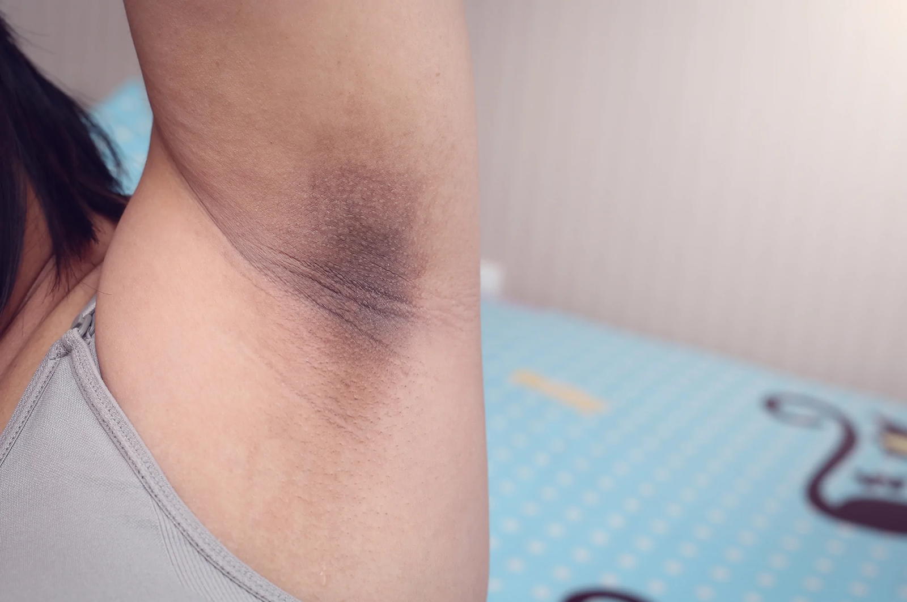
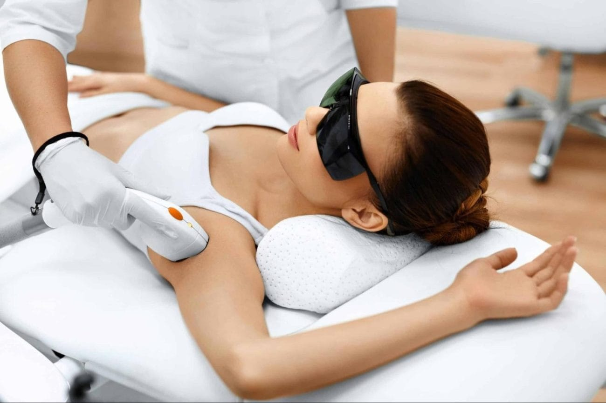
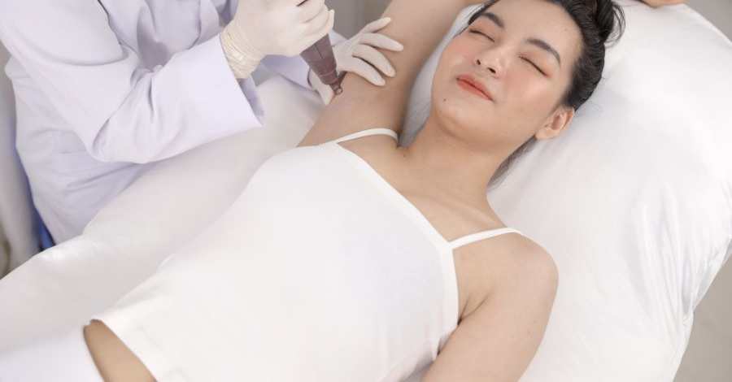

Top 3 địa chỉ trị thâm nách uy tín tại TPHCM
📋 Mục lục
Vùng da dưới cánh tay thâm sạm là nỗi lo khiến nhiều chị em e ngại khi diện trang phục sát nách hay gợi cảm. Nguyên nhân có thể xuất phát từ thói quen cạo nhổ lông, mồ hôi tích tụ, ma sát thường xuyên hoặc thay đổi nội tiết tố sau sinh. Một cách để cải thiện tình trạng này là tìm đến các spa uy tín với liệu trình chuyên sâu giúp trị thâm nách an toàn và hiệu quả. Trong bài viết này, chúng tôi sẽ giới thiệu top 3 địa chỉ trị thâm nách uy tín tại TP.HCM, giúp chị em dễ dàng lựa chọn và lấy lại làn da sáng mịn cùng sự tự tin.
Vì sao cần trị thâm nách?
Vùng da dưới cánh tay thường xuyên chịu ma sát, tiếp xúc với mồ hôi, lăn khử mùi và thói quen cạo hay nhổ lông. Những yếu tố này dễ khiến da thâm, sần sùi, không đều màu. Đặc biệt, với các mẹ sau sinh, hormone thay đổi khiến tình trạng thâm nách nặng hơn, da nhạy cảm hơn, cần được chăm sóc nhẹ nhàng.
Nếu không xử lý, thâm nách ảnh hưởng thẩm mỹ và khiến chị em mất tự tin trong sinh hoạt hàng ngày. Vì vậy, việc lựa chọn spa uy tín để trị thâm nách và cải thiện làn da là cần thiết.
LG Clinic – Địa chỉ hàng đầu trị thâm nách tại TP.HCM
Nếu bạn đang tìm kiếm một địa chỉ trị thâm nách uy tín và hiệu quả tại TP.HCM, LG Clinic chắc chắn là lựa chọn hàng đầu. Nơi đây được nhiều chị em tin tưởng nhờ dịch vụ trị thâm nách chuyên sâu, ứng dụng công nghệ hiện đại và đội ngũ chuyên gia giàu kinh nghiệm. LG Clinic mang đến liệu trình trị thâm nách chuyên biệt giúp làm sáng vùng nách nhanh chóng, an toàn, phù hợp với mọi loại da.
📍 Địa chỉ: 200 Lê Lai, Bến Thanh, Quận 1, TP.HCM
Điểm mạnh vượt trội của LG Clinic trong trị thâm nách
- Công nghệ tiên tiến: LG Clinic sử dụng công nghệ laser hiện đại, tác động trực tiếp lên hắc tố melanin, phá vỡ liên kết sắc tố, giúp vùng da dưới cánh tay sáng mịn tự nhiên mà không gây tổn thương.
- Liệu trình cá nhân hóa: Mỗi khách hàng được xây dựng phác đồ trị thâm nách riêng, phù hợp với mức độ thâm và tình trạng da, đảm bảo kết quả nhanh chóng, bền lâu và hạn chế thâm quay lại.
- An toàn tuyệt đối: Liệu trình được thiết kế để trị thâm nách an toàn cho làn da, kể cả những trường hợp đặc biệt, giúp khách hàng yên tâm tuyệt đối khi trải nghiệm dịch vụ.
- Đội ngũ chuyên gia uy tín: Bác sĩ và kỹ thuật viên tại LG Clinic giàu kinh nghiệm, theo sát quá trình điều trị thâm nách, đảm bảo hiệu quả tối ưu và an toàn tuyệt đối cho khách hàng.
- Không gian sang trọng, tiện nghi: Khách hàng trải nghiệm dịch vụ trong môi trường sạch sẽ, thư giãn, hiện đại, giúp quá trình trị thâm nách trở nên thoải mái và dễ chịu từ lần đầu tiên.
Nhờ sự kết hợp hoàn hảo giữa công nghệ tiên tiến, liệu trình cá nhân hóa và đội ngũ chuyên gia giàu kinh nghiệm, LG Clinic không chỉ là địa chỉ hàng đầu để trị thâm nách tại TP.HCM mà còn cung cấp giải pháp nhẹ nhàng, an toàn cho các mẹ sau sinh với liệu trình trị thâm nách sau sinh, giúp làn da sáng mịn, đều màu và mang lại sự tự tin trọn vẹn.
Thẩm mỹ viện Ngọc Dung
Thẩm mỹ viện Ngọc Dung là thương hiệu lâu đời, hoạt động hơn 25 năm trong lĩnh vực chăm sóc và làm đẹp. Spa áp dụng công nghệ Ipac Laser trị thâm nách, tác động trực tiếp lên sắc tố melanin, giúp vùng da dưới cánh tay sáng hơn, đều màu hơn và mềm mịn hơn. Với liệu trình chuyên biệt, khách hàng sẽ thấy sự cải thiện rõ rệt sau một thời gian ngắn, đồng thời da được chăm sóc an toàn, hạn chế tổn thương.
Ngoài dịch vụ trị thâm nách, Ngọc Dung còn cung cấp nhiều liệu trình chăm sóc da khác, mang đến không gian thoải mái, sang trọng và chuyên nghiệp, giúp khách hàng yên tâm trải nghiệm dịch vụ.
📍 Địa chỉ: 110 Nguyễn Đình Chiểu, Phường 6, Quận 3, TP.HCM
Bệnh viện thẩm mỹ MEDIKA
MEDIKA là bệnh viện thẩm mỹ nổi tiếng tại TP.HCM, được nhiều khách hàng tin tưởng nhờ dịch vụ công nghệ cao và đội ngũ chuyên gia giàu kinh nghiệm. Dịch vụ trị thâm nách tại MEDIKA sử dụng công nghệ laser chuẩn Mỹ, giúp loại bỏ hắc tố melanin tích tụ, làm sáng vùng da dưới cánh tay, cải thiện màu da và mang lại làn da mịn màng, tươi sáng. Liệu trình trị thâm nách tại đây được thực hiện cẩn thận, an toàn, phù hợp với nhiều đối tượng, kể cả làn da nhạy cảm.
Bên cạnh dịch vụ trị thâm nách, MEDIKA còn cung cấp nhiều liệu trình chăm sóc da và thẩm mỹ khác, với không gian hiện đại, thoáng mát và chuyên nghiệp, đảm bảo trải nghiệm tốt nhất cho khách hàng.
📍 Địa chỉ: 273 Điện Biên Phủ, Phường 7, Quận 3, TP.HCM
Những lưu ý khi chọn spa trị thâm nách
Khi lựa chọn spa để trị thâm nách, bạn nên lưu ý một số điểm quan trọng sau:
- Chọn cơ sở uy tín: Ưu tiên các spa có giấy phép hoạt động, đánh giá tốt từ khách hàng và có phản hồi thực tế về dịch vụ trị thâm nách.
- Công nghệ hiện đại: Ưu tiên spa áp dụng công nghệ laser, ánh sáng sinh học hoặc peel da chuyên sâu, giúp cải thiện sắc tố melanin nhanh chóng, an toàn và hiệu quả.
- Liệu trình cá nhân hóa: Mỗi người có mức độ thâm khác nhau, nên liệu trình trị thâm nách cần được thiết kế riêng, phù hợp với tình trạng da và nhu cầu của khách hàng.
- Đội ngũ chuyên gia giàu kinh nghiệm: Quá trình điều trị nên được thực hiện bởi chuyên viên, bác sĩ có chuyên môn, giám sát kỹ lưỡng để đảm bảo an toàn và kết quả tốt nhất.
Nếu bạn đang tìm địa chỉ uy tín để trị thâm nách tại TP.HCM, LG Clinic là lựa chọn hàng đầu. Với công nghệ laser hiện đại, liệu trình cá nhân hóa, đội ngũ chuyên gia giàu kinh nghiệm và không gian sang trọng, LG Clinic giúp chị em cải thiện làn da, làm sáng vùng nách hiệu quả, mang lại sự tự tin và thoải mái trong cuộc sống hàng ngày.